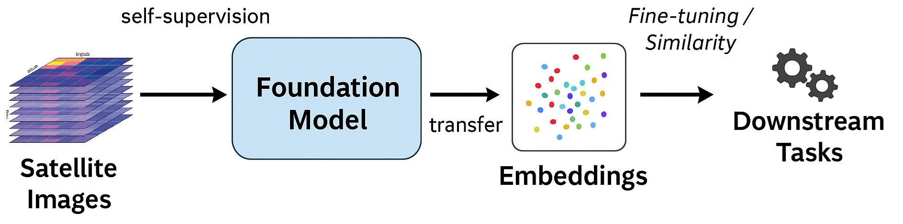
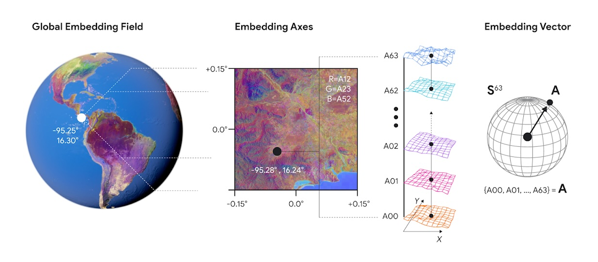

5. Capítulo: Modelos Fundacionales en Observación de la Tierra (FM4EO)#
Los modelos AlphaEarth Foundations, Prithvi y AlphaHertz constituyen ejemplos destacados de modelos fundacionales (foundational models) aplicados al campo de la Observación de la Tierra (EO, Earth Observation).
🔍 ¿Qué es la Observación de la Tierra (EO)?
Observación de la Tierra (EO) es el proceso de recopilar información sobre la superficie terrestre, las aguas y la atmósfera mediante plataformas de teledetección terrestres, aéreas y/o satelitales [EU Agency for the Space Programme (EUSPA), 2024]. Los datos adquiridos son procesados y analizados para extraer distintos tipos de información que pueden usarse para monitorear y evaluar el estado y los cambios tanto en los entornos naturales como en los creados por el ser humano [EU Agency for the Space Programme (EUSPA), 2024]. Los datos de EO sirven a una amplia gama de aplicaciones e industrias, incluyendo: protección ambiental, energía, gestión de áreas urbanas, planificación regional y local, agricultura, silvicultura, pesca, salud, transporte, cambio climático, desarrollo sostenible, protección civil, turismo — y más [EU Agency for the Space Programme (EUSPA), 2024].
5.1. ¿Qué es un modelo fundacional?#
Un modelo fundacional (foundational model) es aquel que:
Se entrena a gran escala (en millones de imágenes o señales).
Aprende representaciones generales (no una tarea específica).
Luego puede ajustarse o especializarse (fine-tuning) para tareas concretas: clasificación, segmentación, detección de cambios, etc.
En el contexto de la EO, estos modelos aprenden patrones espaciales, espectrales y temporales a partir de datos satelitales (ej. Sentinel, Landsat, MODIS, etc.), convirtiéndose en infraestructuras de inteligencia geoespacial reutilizables.
{kind=link}

Fig. 5.1 Esquema de modelo fundacional y embeddings#
🔍 ¿Qué significa auto-supervisión?
La auto-supervisión es un enfoque de aprendizaje donde el modelo se entrena sin etiquetas humanas, generando sus propias tareas predictivas (por ejemplo, reconstruir, comparar o predecir partes de una imagen) para aprender representaciones latentes.
🔍 ¿Porqué se denominan representaciones latenes?
Se denominan representaciones latentes porque codifican la información interna o no observable directamente de los datos —es decir, sus patrones subyacentes o características abstractas— en un espacio matemático comprimido (espacio latente).
En los embeddings satelitales, ese espacio latente representa relaciones semánticas entre píxeles o regiones, más allá de los valores espectrales visibles.
En machine learning, el espacio latente es un espacio matemático (generalmente continuo y de muchas dimensiones) donde los datos se representan de manera comprimida. Por ejemplo: Una red neuronal autoencoder transforma imágenes en vectores en un espacio latente.
5.2. Ejemplos destacados#
5.2.1. 1.2.1. 🛰️ AlphaEarth Foundations (Google DeepMind, 2025)#
Tipo: Modelo fundacional geoespacial (embedding field).
Entrenamiento: Multifuente (óptico, radar, térmico, DEMs, clima…), miles de millones de frames globales.
Capacidades: Embeddings anuales de 64 dimensiones (10 m) listos para clasificación, regresión, detección de cambios y búsqueda por similitud.
Usos: Dataset público Satellite Embedding V1 en Earth Engine (2017–2024).
Institución: Google DeepMind (en colaboración con Google Research/Earth Engine) [Brown et al., 2025].
{kind=link}

Fig. 5.2 AlphaEarth Fundacional de Google y Satellite Embeddings V1#
5.2.2. 1.2.2. 🌎 Prithvi (NASA–IBM, 2024–2025)#
Tipo: Familia de modelos fundacionales para EO y clima.
Entrenamiento: Petabytes de datos NASA (HLS, MODIS/VIIRS) y variantes Wx/Climate.
Capacidades: Fine-tuning para incendios, sequías, inundaciones; mapeo y series temporales.
Usos: Investigación ambiental y climática; modelos publicados y checkpoints abiertos.
Institución: NASA–IBM (con aliados académicos) [Jakubik et al., 2023], [Jakubik et al., 2023], [Szwarcman et al., 2024].
5.2.3. 1.2.3. 🔁 TerraMind (IBM Research, 2025)#
Tipo: Modelos ligeros para EO (versiones tiny/small para edge computing).
Capacidades/Usos: Inferencia en dispositivos modestos con mínima degradación frente a modelos mayores.
Institución: IBM Research (ecosistema NASA–IBM) [Jakubik et al., 2025].
5.3. 📊 Tabla comparativa de modelos fundacionales EO#
Modelo |
Institución |
Año |
Tipo de datos (entrenamiento) |
Capacidades principales |
Aplicaciones principales |
|---|---|---|---|---|---|
AlphaEarth Foundations |
Google DeepMind / Research |
2025 |
Multifuente (Sentinel-1/2, Landsat, clima, etc.) |
Embeddings anuales de 64 dims a 10 m; búsqueda por similitud; base para tareas EO |
Mapeo global, cambio, clasificación; dataset Satellite Embedding V1 (2017–2024) |
Prithvi |
NASA–IBM (+ socios) |
2024–2025 |
Petabytes NASA (HLS, MODIS/VIIRS; variantes Wx/Climate) |
Fine-tuning para incendios, sequías, inundaciones; series temporales y clima |
Investigación ambiental y climática; modelos abiertos en HF |
TerraMind (ligero) |
IBM Research |
2025 |
EO multifuente (versiones tiny/small) |
Inferencia en edge (laptops/smartphones) con mínima pérdida vs. modelos grandes |
Casos de campo con recursos limitados; despliegue local |
5.4. 📘 En resumen académico#
AlphaEarth Foundations (Google DeepMind) y Prithvi (NASA\u2013IBM) son modelos fundacionales verificados para EO, entrenados a gran escala con datos satelitales y diseñados como bases reutilizables para múltiples tareas geoespaciales mediante fine-tuning o transfer learning.
En algunos contextos tambi\u00e9n se mencionan l\u00edneas de trabajo de modelos ligeros para edge computing (por ejemplo, IBM Research), pero su inclusi\u00f3n depende del foco de la presentación o aplicación específica.
🔍 ¿Cuál es la diferencia entre fine-tuning y transfer learning?
Ambos enfoques aprovechan el conocimiento de un modelo preentrenado, pero difieren en cuánto y cómo se ajusta:
Transfer learning: se usa el modelo como extractor de características; las capas preentrenadas permanecen fijas y solo se entrena un nuevo clasificador o capa final sobre los datos locales.
Fine-tuning: implica ajustar parcialmente (o completamente) los pesos del modelo preentrenado usando datos específicos del nuevo dominio, permitiendo una adaptación más profunda al contexto de la tarea.
En síntesis, el transfer learning reutiliza, mientras que el fine-tuning especializa.
5.5. 🧠 1. Definición relacional básica#
Los embeddings son productos intermedios o representaciones aprendidas dentro de un modelo fundacional (foundation model).
Podemos decir que:
🔹 Un modelo fundacional aprende embeddings universales del mundo.
Dicho de otro modo:
Los embeddings son los vectores numéricos que capturan el significado latente de los datos.
Los modelos fundacionales son las arquitecturas de aprendizaje profundo que aprenden, optimizan y generalizan esas representaciones a gran escala.
5.6. 🧩 2. Diferencia estructural y funcional#
Aspecto |
Embeddings |
Modelos Fundacionales (FM) |
|---|---|---|
Nivel ontológico |
Representaciones latentes del conocimiento (vectores) |
Sistemas que aprenden y generan esas representaciones |
Escala |
Un embedding describe un píxel, palabra o entidad |
Un FM abarca el universo de entrenamiento multimodal |
Propósito |
Capturar similitud semántica en un espacio vectorial |
Aprender tareas generales (clasificación, descripción, predicción, generación) |
Analogía |
El ADN semántico del dato |
El organismo inteligente que produce y utiliza ese ADN |
Ejemplo |
|
OneVision, Prithvi, AlphaHertz, SatCLIP (modelos fundacionales EO) |
5.7. 🌍 3. En el contexto de la Observación de la Tierra (EO)#
Los Foundation Models for Earth Observation (FM4EO) —como OneVision, Prithvi o AlphaHertz— se entrenan sobre billones de píxeles multiespectrales y multitemporales.
Durante este proceso, aprenden a representar patrones espaciales, temporales y contextuales en espacios latentes de alta dimensión: los embeddings satelitales.
El embedding satelital es, por tanto, el lenguaje interno del modelo fundacional:
cada vector resume la firma semántica del lugar en términos que la red neuronal entiende y puede reutilizar.
Por ejemplo:
Un píxel de agua y otro de sombra montañosa pueden tener reflectancias similares,
pero embeddings distintos, porque el modelo aprendió que uno pertenece a un lago y el otro a una ladera.Un modelo fundacional generaliza esa distinción a escala global,
y luego emite embeddings consistentes que otros modelos o tareas pueden usar (clasificación, segmentación, detección de cambio, etc.).
5.8. ⚙️ 4. Relación jerárquica: el embedding como capa latente#
En un esquema conceptual:
Los datos crudos (imágenes ópticas, radar, multitemporales) son la entrada.
El modelo fundacional actúa como codificador semántico auto-supervisado.
El resultado son embeddings universales, reutilizables para múltiples tareas.
A partir de ellos, se puede hacer fine-tuning, búsqueda por similitud, clustering o clasificación supervisada.
En este sentido, los embeddings son la capa intermedia universal entre la percepción y el razonamiento.
🎯 ¿Qué son las tareas downstream?
Tareas downstream son las tareas específicas o aplicaciones finales que se desarrollan después del modelo fundacional o del proceso de embedding.
En otras palabras, son las tareas que utilizan las representaciones aprendidas (embeddings) para resolver problemas concretos del dominio geoespacial.
Tipo de tarea downstream |
Ejemplo en Observación de la Tierra (EO) |
|---|---|
Clasificación supervisada |
Identificar coberturas de suelo (urbano, agua, vegetación, nieve). |
Segmentación semántica |
Delimitar polígonos de uso/cobertura o cultivos. |
Detección de cambios |
Comparar embeddings de distintos años para localizar áreas transformadas. |
Regresión geoespacial |
Estimar variables continuas (biomasa, NDVI, humedad del suelo). |
Búsqueda por similitud |
Encontrar regiones con patrones espectrales o contextuales similares. |
En síntesis, las tareas downstream representan la aplicación práctica del conocimiento aprendido por el modelo fundacional, transformando los embeddings en resultados analíticos o mapas temáticos.
5.9. 🧭 5. Perspectiva epistemológica#
Desde una mirada científica más profunda:
Los embeddings son la epistemología interna de los modelos fundacionales.
Representan el conocimiento condensado que el modelo adquiere sobre la estructura estadística del mundo.
El paso desde “imagen multibanda” hacia “vector semántico” implica un cambio de paradigma:
de una ontología física (valores radiométricos) a una ontología estadístico-semántica (vectores de significado).
Así, los modelos fundacionales son, en última instancia, modelos de significado,
y los embeddings, las unidades mínimas de sentido en ese lenguaje.
5.10. Analogia entre LLM y FM4EO#
5.10.1. Fundamento conceptual: “aprendizaje universal”#
Aspecto |
LLM (Large Language Models) |
Modelos Fundacionales EO (Earth Observation) |
|---|---|---|
Dominio |
Lenguaje natural |
Imágenes satelitales, series temporales y variables geofísicas |
Entrenamiento |
Trillones de palabras y contextos textuales |
Petabytes de datos multiespectrales y climáticos (MODIS, Sentinel, Landsat, HLS, etc.) |
Metaaprendizaje |
Captura patrones sintácticos y semánticos del lenguaje |
Captura patrones espaciales, espectrales y temporales del planeta |
Resultado |
Representaciones vectoriales de significado lingüístico |
Embeddings geoespaciales de fenómenos naturales y antrópicos |
En ambos casos, el modelo aprende una representación latente general del dominio, capaz de transferirse a tareas específicas mediante fine-tuning o prompting.
5.10.2. Arquitectura y representación#
Los LLM utilizan transformers para modelar relaciones entre tokens (palabras).
Los foundation models geoespaciales (como Prithvi, AlphaEarth o TerraMind) usan arquitecturas análogas (Vision Transformers, Spatio-Temporal Transformers), pero sobre píxeles, espectros y tiempos en lugar de texto.
En ambos casos, los embeddings producidos son vectores latentes que condensan conocimiento contextual
En LLM: “semántica lingüística”.
En EO: “semántica geofísica del territorio”.
5.10.3. Transferencia y adaptabilidad#
Los LLM pueden especializarse con fine-tuning para tareas como resumen, traducción o razonamiento.
Los modelos fundacionales EO se ajustan a tareas como clasificación de coberturas, detección de incendios, estimación de humedad o monitoreo de cambios.
Ambos funcionan bajo el principio de “pre-entrenar en todo, adaptar en algo”.
5.10.4. Naturaleza multimodal#
Tanto los LLM como los modelos fundacionales tienden hacia la multimodalidad:
LLM → texto + imágenes + audio + video
EO foundation models → radar + óptico + elevación + clima + series temporales
Ambos buscan una representación unificada del conocimiento, ya sea del lenguaje o del planeta.